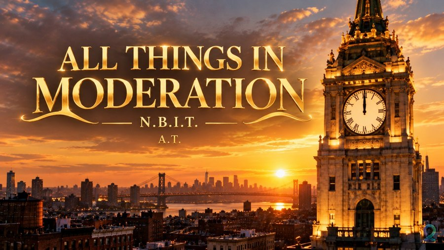

Track 12 · My Turn
All Things In Moderation N.B.I.T
Before the big night, there were the grind years: evicted and sleeping on her best friend's couch, diner shifts, college classes, a notebook full of rhymes at 2 a.m., open mics for twelve people, burned CDs handed out on Brooklyn corners and music videos shot on a camcorder with her girls. She watched everybody skip the line. She planted seeds in the winter and waited. Patience is a skill, and when her time came, it was worth every minute.
 Watch the official video
Watch the official video
Lyrics
[Intro]
Uh... tick tock
They always ask me, "A.T., when?"
I just smile and tell 'em
Nothin' before its time
[Verse 1]
Uh, I watched 'em skip the line while I stood in the cold
They was flashin' fake chains, I was buildin' my gold
Same class, same block, same dream, same goal
They took the shortcut, I took the long road
Little homie got a whip 'fore he even had a plan
Now he catchin' the bus tryna borrow from his man
I ain't laughin', I'm just sayin' what the patience protect
You can rush to the top, but you can't rush respect
Mama said, "Baby, the oven don't hurry the bread"
So I let it rise slow while they ran up ahead
Took notes, took losses, took my time with the craft
Every step was a lesson, every lesson a map
They be postin' every win like the race already done
I'm still stretchin' at the line, I ain't even begun
See, the tortoise had a plan, ain't no rabbit in me
What's for me is for me, it was meant to be
[Hook]
All things in moderation (N.B.I.T.)
Nothin' before its time, that's the way it's gotta be
I ain't in a rush, I'm just patient with the plan
When my time come, you gon' see just who I am
All things in moderation (N.B.I.T.)
Nothin' before its time, that's the way it's gotta be
I ain't in a rush, I'm just patient with the plan
When my time come, you gon' see just who I am
[Verse 2]
Patience ain't weakness, it's a skill you gotta learn
Like a fire in the stove, gotta wait for it to burn
Discipline in the mornin' while the world still asleep
I'm plantin' seeds in the winter for the harvest I keep
Chess moves, not checkers, I'm three moves ahead
While they chasin' every headline, I'm just readin' the spread
I could jump right now, but the timin' ain't right
An eagle don't swoop till the wind is just right
Moderation in the money, moderation in the fun
Little bit of everything, but too much of none
They gamblin' it all on a one night thrill
I'm stackin' up the bricks, buildin' slow on my hill
Seen 'em shinin' for a minute, then they fade into gray
'Cause what come too quick usually leave the same way
Diamonds take pressure, and pressure take time
And a queen ain't rushin' when the crown is designed
[Hook]
All things in moderation (N.B.I.T.)
Nothin' before its time, that's the way it's gotta be
I ain't in a rush, I'm just patient with the plan
When my time come, you gon' see just who I am
All things in moderation (N.B.I.T.)
Nothin' before its time, that's the way it's gotta be
I ain't in a rush, I'm just patient with the plan
When my time come, you gon' see just who I am
[Bridge]
Nothin' before its time (no)
What's meant for me is mine (mine)
I'll wait, I'll wait for the appointed time
And when it comes, oh, it's gonna shine
[Verse 3]
Uh, now the seasons done changed and the harvest is in
Same ones laughin' at the start wanna know where I been
I been right here grindin', I been workin' on me
Bein' patient with the process, now the world gotta see
It was ordained, it was written 'fore I even arrived
What's for me can't miss me, it was always designed
Every "no" was a "not yet," every wait was a gift
Every door that stayed closed was just savin' my lift
Delayed gratification, now I'm takin' my plate
And the meal taste sweeter 'cause I knew how to wait
I ain't mad at nobody who was runnin' too fast
It's a marathon, baby, I was built to outlast
So if you watchin' from the sidelines while they speedin' on by
Your time is ordained, keep your head to the sky
Moderation and patience, that's the recipe, see
Nothin' before its time, N.B.I.T.
[Final Hook]
All things in moderation (N.B.I.T.)
Nothin' before its time, that's the way it's gotta be
I ain't in a rush, I'm just patient with the plan
When my time come, you gon' see just who I am
All things in moderation (N.B.I.T.)
Nothin' before its time, that's the way it's gotta be
I ain't in a rush, I'm just patient with the plan
When my time come, you gon' see just who I am
[Outro]
All things in moderation
Nothin' before its time
Tick tock
A.T.
Written by Grey Beard and A.T. ℗ & © 2026 Threadia AI, Inc. All rights reserved.